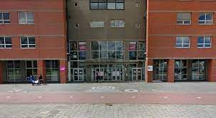
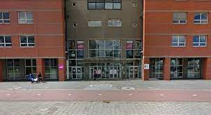

Introductie
Welkom in mijn digitale reis als beginnende software developer. Ik ben Jaiden Dorchain, een enthousiaste codeerder die gepassioneerd is door het creëren van mooie en functionele softwareoplossingen. In mijn portfolio vind je een boeiende kijk op mijn reis tot nu toe. Als nieuwkomer in de wereld van een software developer ben ik voortdurend bezig met het ontdekken van nieuwe technologieën en het verbeteren van mijn programmeervaardigheden. Mijn projecten variëren van eenvoudig tot meer uitdagend, en ze laten mijn groei als ontwikkelaar zien. Wat me drijft, is het oplossen van problemen en het creëren van mijn eigen code en deze publiceren zodat anderen deze eventueel ook kunnen gebruiken of inspiratie van kunnen bouwen. Ik geloof in de kracht van technologie om levens te verbeteren en wil graag bijdragen aan spannende projecten die impact hebben. Ik kijk uit naar de mogelijkheden om samen te werken, te leren en te groeien in de boeiende wereld van softwareontwikkeling.


 
